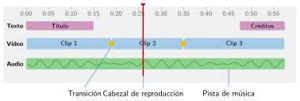

Grabar y editar vídeo
Criterios: 6g, 6h, 6i
🤔 Pienso10 min
Qué hago aquí: Piensa un momento y contesta con lo que ya sabes. No pasa nada si no lo sabes: es para empezar.
Piensa en un anuncio corto que recuerdes. ¿Cuánto duraba cada plano? ¿Había texto o voz?
📖 Leo y aprendo30 min
Qué hago aquí: Lee despacio, mira los dibujos y los ejemplos, y quédate con la idea clave del final.
Antes de grabar, se hace un guion gráfico (storyboard): un dibujo de cada plano con lo que se ve, lo que se oye y lo que dura.
Para editar, Clipchamp (incluido en Windows y Microsoft 365) trabaja con una línea de tiempo donde se colocan los clips, los textos y los sonidos:

Los pasos: importar los clips, arrastrarlos a la línea de tiempo, cortar lo que sobra (dividir en el cabezal y borrar), ordenar, añadir transiciones suaves, títulos y música libre de derechos (bajando su volumen cuando se habla) y exportar en MP4 a 1080p. Un GIF es una animación corta sin sonido que se repite; se crea en Canva o Clipchamp y pesa poco.
✏️ Hago360 min
Qué hago aquí: Haz las actividades en orden. Empieza siempre por las básicas.
Haz el guion gráfico de un vídeo de 30 segundos para presentar la papelería: seis planos de 5 segundos con lo que se ve y lo que se oye.
Graba los planos con el móvil siguiendo los consejos e impórtalos en Clipchamp (o pásalos al ordenador por cable o por OneDrive). (criterios 6g y 6h)
Edita el vídeo: corta, ordena, pon un título al principio, el logo al final, una transición y música libre. Expórtalo en MP4 a 1080p y comprueba su tamaño.
Graba un tutorial de un minuto con la pantalla y tu voz explicando cómo insertar una tabla en Word.
Crea el GIF para felicitar las fiestas a los clientes de tu empresa con tus colores y tu logo (trabajo final, tarea 5).
Escribe una guía básica de una página para la oficina: cómo hacer y preparar fotos de producto y vídeos cortos (formatos, tamaños, nombres de archivo y licencias). (criterio 6i)
🚀 Amplío (si quieres saber más)
Qué hago aquí: ¿Has terminado? Lee la curiosidad o elige el reto. Es voluntario.
Añade subtítulos automáticos a tu vídeo y corrígelos. ¿Cuántos errores tenía la transcripción?
✅ Compruebo10 min
Qué hago aquí: Contesta sin mirar la ficha y marca cómo lo llevas.